We’ll also create the same basic plot as last week, so that we have a plot to work with when saving plots:
p <- penguins |>drop_na() |># Get rid of rows with NAsggplot(aes(x = flipper_length_mm, y = body_mass_g)) +geom_point(aes(fill = species), shape =21, size =2) +scale_fill_brewer(palette ="Dark2") +scale_y_continuous(labels = scales::label_comma()) +labs(x ="Flipper length (mm)", y ="Body mass (g)")p
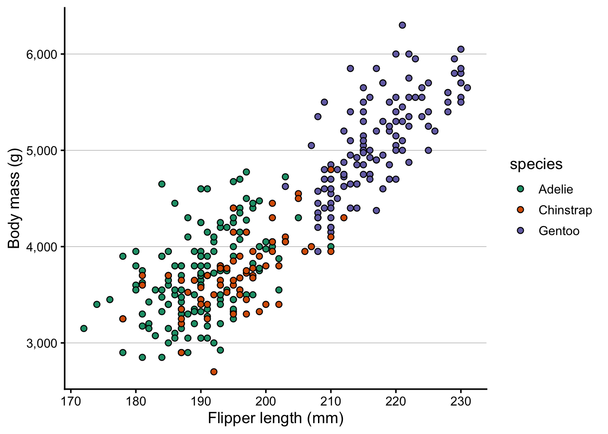
2 Saving plots to file
So far, we printed plots to the screen in RStudio but did not save them to file. You may have noticed the “Export” button in the Plots pane — it works, but a more flexible and reproducible approach is the ggsave() function.
2.1 Basic usage
Tell ggsave() about the filename and the plot you want to save:
ggsave(filename ="plot.png", plot = p)
Saving 7 x 5 in image
The file type is determined by the extension you provide. Above, we used .png i.e. a PNG file, but there are other options, as we’ll see in a bit.
We did not specify the width and height of the figure above, so it reports saving it to a default size of 7 × 5 inches.
Saving plots without specifying the plot object (Click to expand)
By default, ggsave() saves the last plot you produced, and you only need to specify the filename:
ggsave(filename ="plot.png")
This can e.g. be handy because you may not have saved your plot to an object.
Saving the file in a different folder on your computer (Click to expand)
In both cases above, the file would be saved to the folder that represents your current “working directory” (directory = folder) in R. But you can save the file to any location on your computer by specifying the path as part of the filename:
# Save to a "figures" subfolder in the current working directory:ggsave(filename ="figures/plot.png", plot = p)# Save to a specific folder on your computer:ggsave(filename ="C:/Users/YourName/Documents/figures/plot.png", plot = p)
The figure’s size may not seem to matter much, because you could always resize the figure on the computer, right? In fact, what does an inch even mean in the context of a figure displayed on a screen?
But these dimensions are important when considering the figure’s aspect ratio and the relative text size.
Aspect ratio
The figure’s width relative to the height, somewhat obviously, determines its aspect ratio – and this can be useful to be mindful of and customize when appropriate.
Above, our figure is 50% wider than it is high, and that is sensible because we have a legend on the right-hand side of the plot that takes up horizontal space. But for the sake of practice, let’s save the same plot with a different aspect ratio:
Here is what the resulting figures should look like:
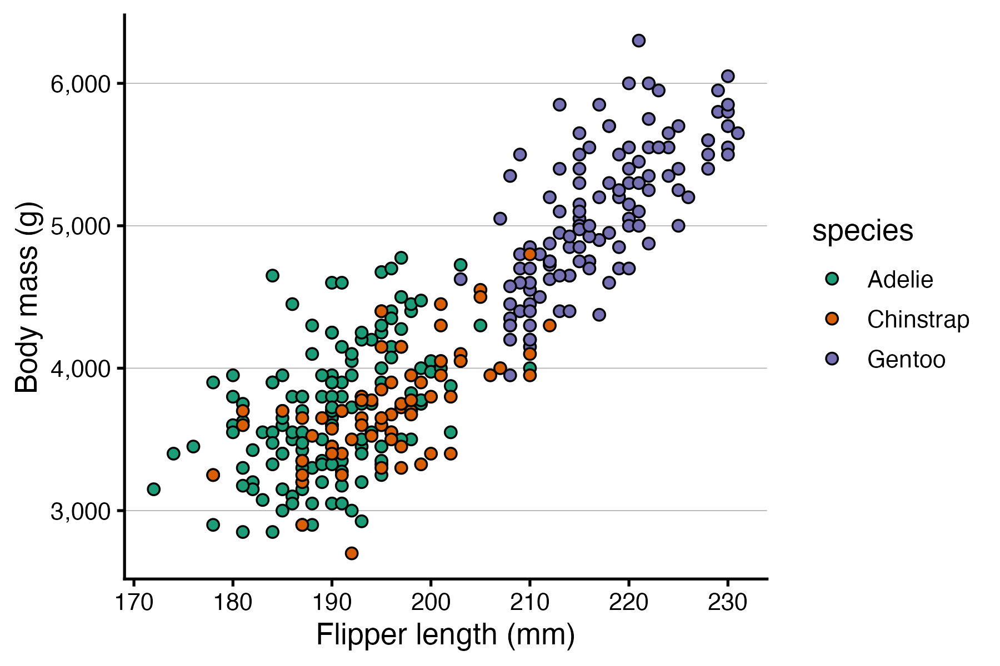
Relative text size
Text and points do not scale with the figure — they stay at their absolute sizes (in points/mm). This means:
A plot saved at 3 × 3 will have large-looking text relative to the data
A plot saved at 10 × 8 will have small-looking text
This behavior may seem strange but is actually useful: if your text looks too large or too small in the saved file, you can adjust width and height rather than modifying the plotting code. Let’s see this in action, too:
# "Small" figure — text will look relatively largeggsave(filename ="small.png", plot = p, width =4.5, height =3)# "Large" figure — text will look relatively smallggsave(filename ="large.png", plot = p, width =9, height =6)
Here is what the resulting figures should look like:
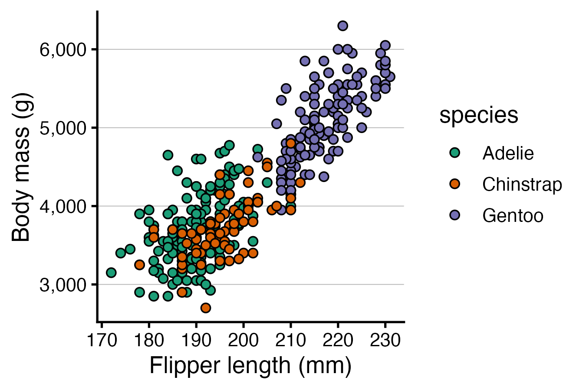
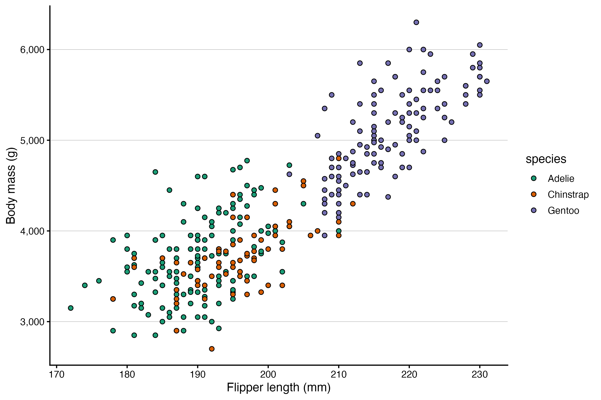
2.3 Raster vs. vector formats
When saving a figure, you have two fundamentally different types of format to choose from:
Raster formats (PNG, JPEG, TIFF) store the image as a grid of pixels.
Quality is fixed at save time using the figure’s “resolution” — but zoom in far enough and you’ll see pixelation. Among these formats, TIFF is generally preferred for scientific publications while PNG may also work, while JPEG should typically be avoided.
Vector formats (SVG, PDF) store the image as geometric instructions — lines, curves, text.
They render sharply at any size, and text is selectable and searchable. Among these formats, SVG is generally preferred or scientific publications.
For publication, vector formats are generally preferable when the journal accepts them. Figures will be crisp at any print size, and editors or co-authors can make minor tweaks in a vector editor such as InkScape or Illustrator.
To save to SVG format, we need the svglite package – let’s install that:
install.packages("svglite")# (We don't need to load it with library() because ggsave() will use it # automatically when we save to SVG)
As mentioned above, the filetype is simply specified in ggsave() using the file extension. Earlier, we saved to PNG, so let’s now practice saving to SVG:
While you can set the fontface (plain, bold, italic, etc.) of axis titles, legend titles, and so on with theme(), you can’t make individual words in these titles bold or italic with that approach. (The same is true for applying colors.)
ggtext is a package that lets you use Markdown and HTML markup to format text in ggplot2 plots. It is useful for things like bolding, italicizing or coloring individual words in a label. Install it if you don’t have it yet:
install.packages("ggtext")
Then load it:
library(ggtext)
The main function in ggtext is element_markdown(). It works as a drop-in replacement for element_text() in theme() calls, and enables Markdown and HTML parsing for that text element.
Let’s say for the sake of argument that in our penguin scatterplot, we wanted to make parts of the axis titles bold and italic. The Markdown syntax to make text bold is **text** and *text* to make it italic.
Without element_markdown(), the asterisks are printed literally:
p +labs(x ="**Flipper length** (*mm*)", y ="**Body mass** (*g*)")
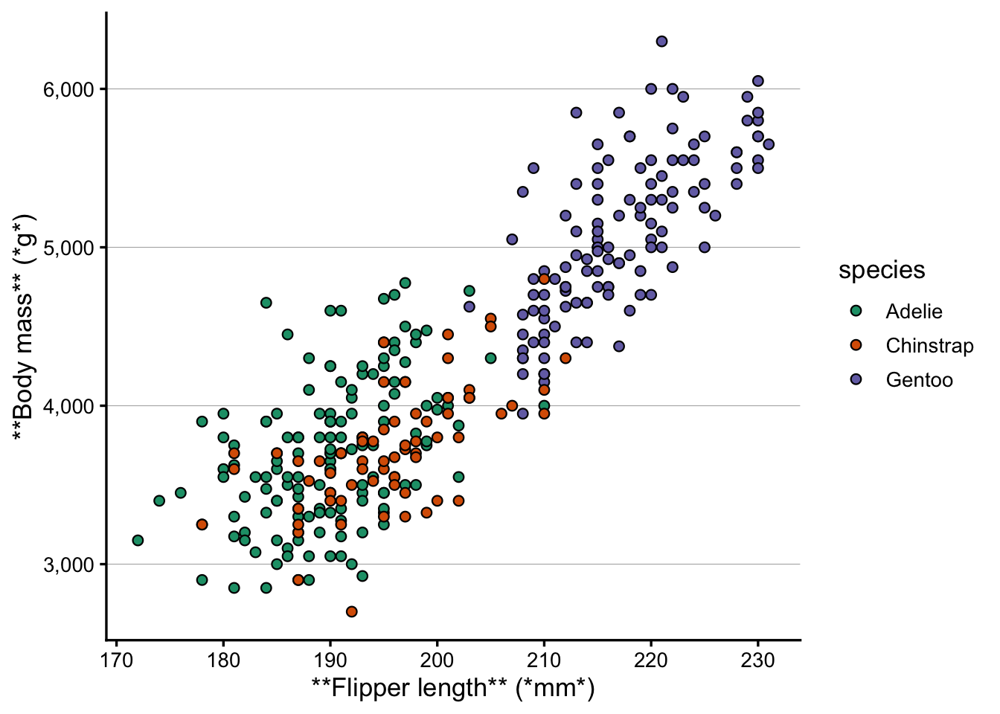
Once we switch to element_markdown(), the formatting is applied:
p +labs(x ="**Flipper length** (*mm*)", y ="**Body mass** (*g*)") +theme(axis.title.x =element_markdown(),axis.title.y =element_markdown() )
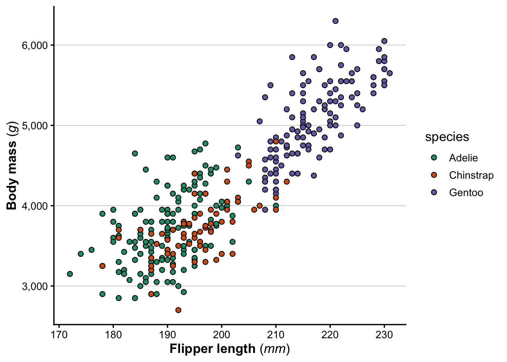
element_markdown() can be used for any text element in theme(): axis titles, axis tick labels, plot titles, captions, and so on.
As another example, say we wanted italic species names in the legend. First, note that if it’s OK that everything becomes italic, we can just do that with theme():
p +theme(legend.text =element_text(face ="italic"))
But what if we needed to make only one part of the text italic? We could do that once again with ggtext. First, let’s define the labels we want to use for the legend, with Markdown syntax for italics:
Next, we can use these labels in the legend with scale_fill_brewer(), and then tell theme() to interpret the legend text as Markdown with element_markdown():
p +scale_fill_brewer(palette ="Dark2", labels = species_labs) +theme(legend.text =element_markdown())
Scale for fill is already present.
Adding another scale for fill, which will replace the existing scale.
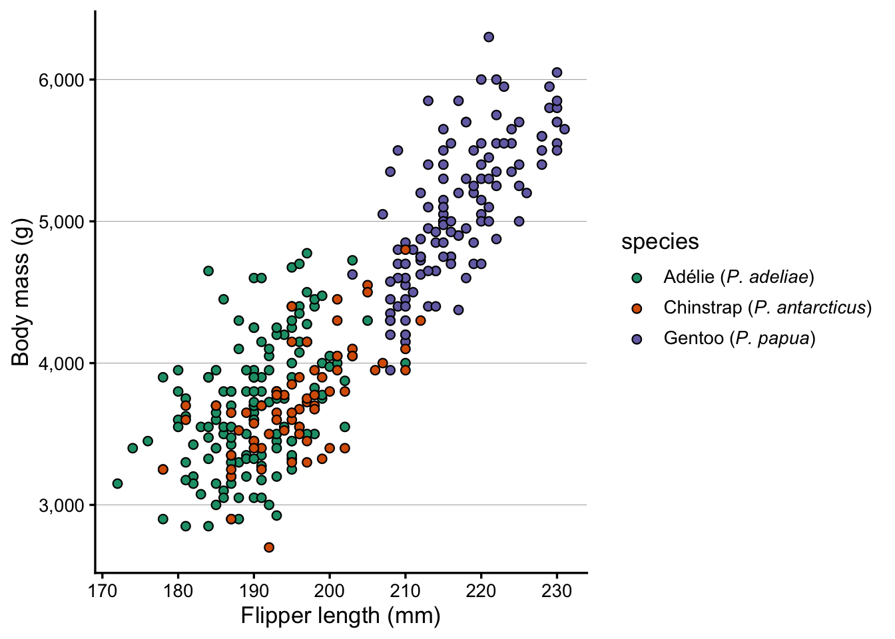
Colored text! (Click to expand)
You probably won’t need this in a scientific publication, but it can be useful for other, more informal, contexts. For example, you could color species names in a plot title to match the data colors, making the legend redundant.
To color individual words, use an HTML <span> tag with inline CSS:
<span style="color:#1B9E77">some text</span>
Above, #1B9E77 is the hex code for a specific color. Let’s find the three colors that scale_fill_brewer(palette = "Dark2") assigns to the three species:
RColorBrewer::brewer.pal(3, "Dark2")
[1] "#1B9E77" "#D95F02" "#7570B3"
The species factor levels in the penguins data are alphabetical (Adelie, Chinstrap, Gentoo), so those colors are assigned in that order. Now let’s use them in the title:
Because the title now carries the color information, we can choose to remove the legend with legend.position = "none".
Exercise: Text formatting
It’s common to need subscripts and superscipts in axis titles. R has a special syntax for that, but it can be a bit tricky to get right. Now that we’re using ggtext, we can use Markdown syntax for subscripts and superscripts instead, which is:
^...^ for superscripts, e.g. 3x10^-3^ to produce 3x10-3
~...~ for subscripts, e.g. H~2~O to produce H2O
Let’s pretend that the x-axis of our plot is showing flipper surface in mm2, and that the y-axis is on a log10-scale. Modify the axis titles to reflect this, using Markdown syntax for the superscripts and subscripts.
(Bonus: actually change the y-axis to a log10-scale.)
Click to see a solution
p +labs(x ="Flipper surface (mm^2^)",y ="Body mass (g on a log~10~-scale)" ) +theme(axis.title.x =element_markdown(),axis.title.y =element_markdown() )
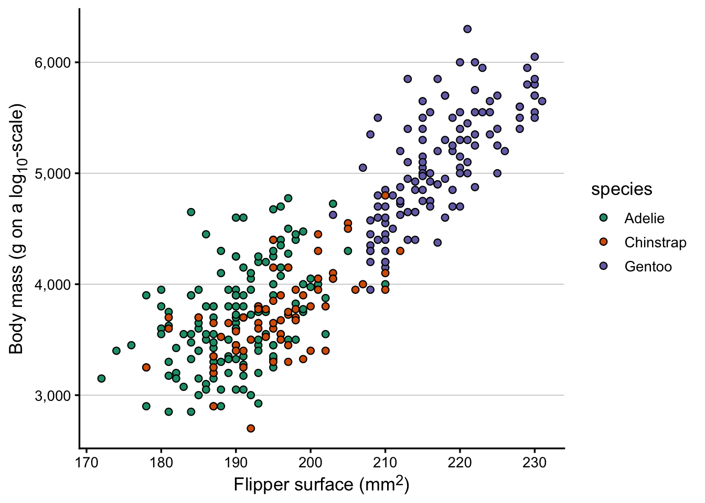
Bonus: changing the y-axis to a log10-scale – though because our y-axis shows a fairly small range and doesn’t start at zero, the log transformation doesn’t really do anything useful:
p +scale_y_log10() +labs(x ="Flipper surface (mm^2^)",y ="Body mass (g on a log~10~-scale)" ) +theme(axis.title.x =element_markdown(),axis.title.y =element_markdown() )
Scale for y is already present.
Adding another scale for y, which will replace the existing scale.
4 Adding images to plots
Say that we wanted to add this beatiful AI-generated image of the three penguin species in the penguins dataset to our plot:
From left to right: Adélie, Chinstrap, and Gentoo.
To follow along with the code below, download the file 3penguins.png with this image from our GitHub repo:
We’ll also load two additional packages for working with images in R:
# (This is needed for the second part: adding images as a panel)library(grid) # Should always be installedlibrary(png) # If you don't have it, install with install.packages("png")
4.1 An image inside a plot
I think this is most easily done with the cowplot package, which has a draw_image() function to add images to ggplots. Install cowplot if you don’t have it already, then load it:
install.packages("cowplot")
library(cowplot)
Attaching package: 'cowplot'
The following object is masked from 'package:patchwork':
align_plots
The following object is masked from 'package:lubridate':
stamp
Now, we can add the image to our plot with ggdraw() and draw_image(), where:
The x and y arguments specify the position of the image in the plot (between 0 and 1), with x being the left-most position and y being the bottom-most position. These are not the same as the x and y axes of the plot, but rather the position of the image relative to the plot area.
The height and width arguments specify the size of the image relative to the plot (between 0 and 1). One thing to note is that the aspect ratio of the image is preserved, so even if you specify a square image like we do below, the actual image may not be square if the original image is not square. While it may seem odd in that case to specify both width and height, when omitting one of these, the function somehow has strange behavior with respect to the x and y coordinates. 🤷♂️
ggdraw(p) +draw_image("3penguins.png", x =0.1, y =0.65, height =0.35, width =0.35)
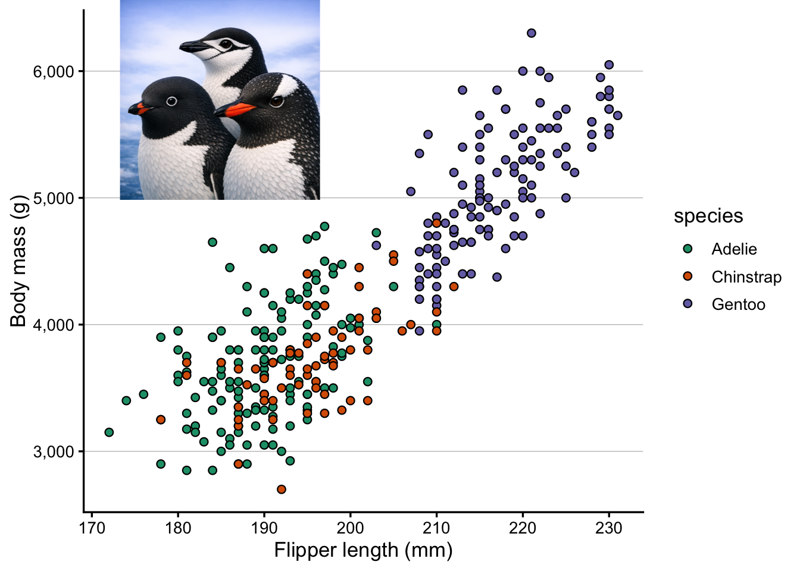
4.2 An example with multiple images
Say that we wanted to add a separate image for each penguin species in an appopriate part of the plot. First, download the following penguin images:
ggdraw(p) +draw_image("adelie.png", x =0.2, y =0.6, height =0.15, width =0.15) +draw_image("chinstrap.png", x =0.5, y =0.25, height =0.15, width =0.15) +draw_image("gentoo.png", x =0.4, y =0.8, height =0.15, width =0.15)
Bonus Exercise: Add images to a boxplot
Create a boxplot with penguin species along the x-axis, and any of the penguin measurements along the y-axis. Then add the three penguin images to the plot, placing each image either above the boxplot for the corresponding species, or just below the plot panel (i.e. in the plot margin).
Click to see a solution
At the top of the plot:
p <- penguins |>drop_na() |>ggplot(aes(x = species, y = body_mass_g)) +geom_boxplot() +scale_y_continuous(labels = scales::label_comma(),# Manually specify the upper axis limitsand breaks to make room for the imagelimits =c(NA, 6800),breaks =seq(3000, 6000, by =1000) ) +labs(x =NULL, y ="Body mass (g)")ggdraw(p) +draw_image("adelie.png", x =0.20, y =0.85, height =0.15, width =0.15) +draw_image("chinstrap.png", x =0.48, y =0.85, height =0.15, width =0.15) +draw_image("gentoo.png", x =0.75, y =0.85, height =0.15, width =0.15)
In the lower margin:
p <- penguins |>drop_na() |>ggplot(aes(x = species, y = body_mass_g)) +geom_boxplot() +scale_y_continuous(labels = scales::label_comma()) +labs(x =NULL, y ="Body mass (g)") +theme(plot.margin =margin(t =5, r =5, b =60, l =5), # extra bottom margin ) ggdraw(p) +draw_image("adelie.png", x =0.20, y =-0.01, height =0.15, width =0.15) +draw_image("chinstrap.png", x =0.48, y =-0.01, height =0.15, width =0.15) +draw_image("gentoo.png", x =0.75, y =-0.01, height =0.15, width =0.15)
Multiple images in a plot, with boxes (Click to expand)
I thought drawing colored boxes around the penguins images could be a useful example. This turned out to be more difficult than expected, so we won’t cover it during the Code Club session. But for your and my future reference, I am including the code here.
First off, I couldn’t get this to work in combination with the draw_image() approach used above to insert the images. Instead, we’ll have to switch to a patchwork-based approach. To insert a single image like we did above, that would look as follows:
# Setting the image width as a variableswidth <-0.35# Read in the imageraw <-readPNG("3penguins.png")img <-rasterGrob(raw, width =unit(1, "npc"), height =unit(1, "npc"))# Obtain the image's aspect ratio and compute the height from that:# This is necessary because we need to specify the coordinates of all corners# of the image when using inset_element(), and we want the aspect ratio to be correct.aspect_ratio <-dim(raw)[1] /dim(raw)[2]height <- width * aspect_ratio# Create the plot with the inserted image# (Setting the plot panel's aspect ratio to 1 seems necessary for the image's# aspect ratio to be correctly displayed.)p +theme(aspect.ratio =1) +inset_element(img, right =0.4, left =0.4- width, top =1, bottom =1- height)
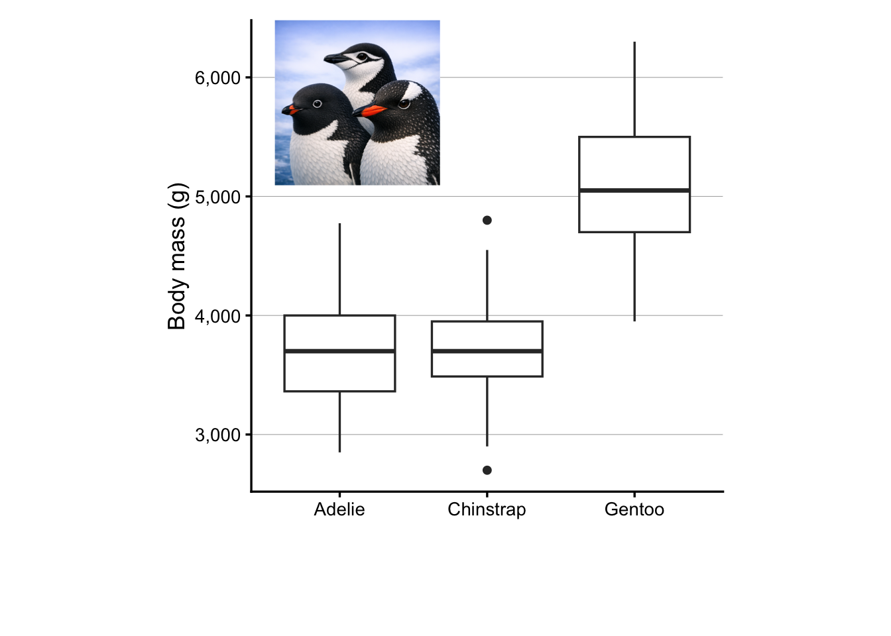
That works, but you can hopefully see why I choose to use draw_image() instead for the earlier examples. Now, let’s expand this approach in order to insert individual penguins’ images with colored boxes:
# Set the width and save the desired box colorswidth <-0.15colors <- RColorBrewer::brewer.pal(n =8, name ="Dark2")
# Adelieraw_ade <-readPNG("adelie.png")img_ade <-rasterGrob(raw_ade, width =unit(1, "npc"), height =unit(1, "npc"))aspect_ade <-dim(raw_ade)[1] /dim(raw_ade)[2]ht_ade <- width * aspect_adebox_ade <-ggplot() +theme_void() +theme(panel.border =element_rect(fill =NA, color = colors[1], linewidth =2))# Chinstrapraw_chi <-readPNG("chinstrap.png")img_chi <-rasterGrob(raw_chi, width =unit(1, "npc"), height =unit(1, "npc"))aspect_chi <-dim(raw_chi)[1] /dim(raw_chi)[2]ht_chi <- width * aspect_chibox_chi <-ggplot() +theme_void() +theme(panel.border =element_rect(fill =NA, color = colors[2], linewidth =2))# Gentooraw_gen <-readPNG("gentoo.png")img_gen <-rasterGrob(raw_gen, width =unit(1, "npc"), height =unit(1, "npc"))aspect_gen <-dim(raw_gen)[1] /dim(raw_gen)[2]ht_gen <- width * aspect_genbox_gen <-ggplot() +theme_void() +theme(panel.border =element_rect(fill =NA, color = colors[3], linewidth =2))p +theme(aspect.ratio =1) +inset_element(img_ade, right =0.2, left =0.2- width, top =0.6, bottom =0.6- ht_ade) +inset_element(box_ade, right =0.2, left =0.2- width, top =0.6, bottom =0.6- ht_ade) +inset_element(img_chi, right =0.7, left =0.7- width, top =0.3, bottom =0.3- ht_chi) +inset_element(box_chi, right =0.7, left =0.7- width, top =0.3, bottom =0.3- ht_chi) +inset_element(img_gen, right =0.6, left =0.6- width, top =0.9, bottom =0.9- ht_gen) +inset_element(box_gen, right =0.6, left =0.6- width, top =0.9, bottom =0.9- ht_gen)
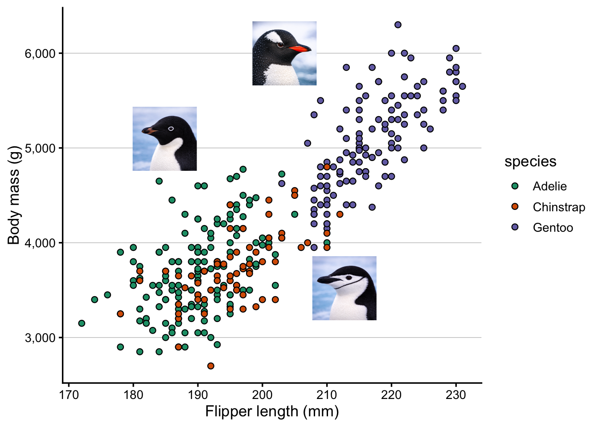
4.3 An image in a multi-panel layout
Now, let’s explore adding an image to a multi-panel layout, so basically treating the image as just another plot in the layout.
For that, we’ll start with the same three-panel layout as in the previous session:
As a first step in including the penguin image, we’ll read it in as a graphical object with readPNG() and rasterGrob():
img <-rasterGrob(readPNG("3penguins.png"))
Next, we can add the image to the layout with patchwork’s wrap_elements() function:
# Store the image as a plot element with wrap_elements():p_img <-wrap_elements(panel = img)# Add the image to the layout with patchwork syntax:(p_scatter + p_img) / (p_bar | p_box)
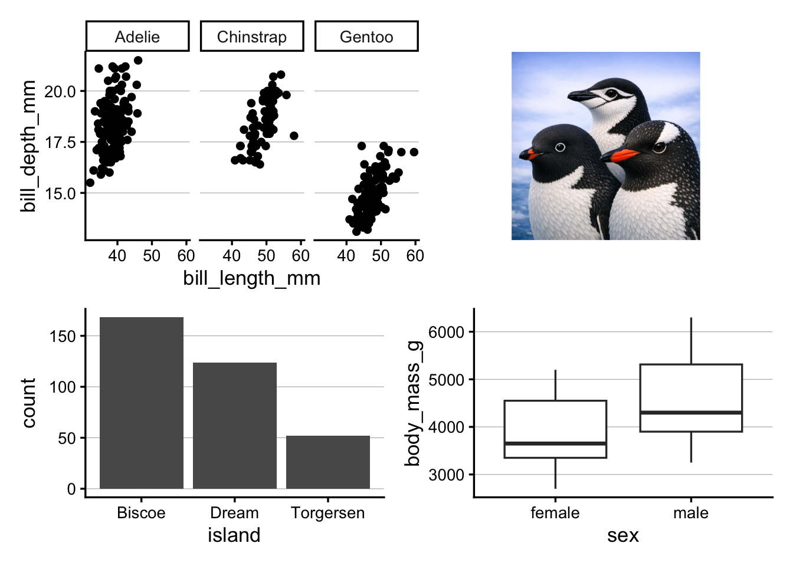
Above, the plot with the image is quite small, and this is because the image is being resized to fit the plot panel (that is, the area inside the axes of a plot). Note that it’s taking up the entire plot panel height, but because the image has a 1:1 aspect ratio, it is not taking up the entire plot panel width. While that makes it appear even smaller, it’s a good thing that the image’s aspect ratio is respected, or the image would look stretched.
Alternatively, we can tell wrap_elements() to use the entire plot area for the image with plot = (above, we used panel =):
A different method with different image-fitting behavior (Click to expand)
A final alternative is to read the image in with the magick package. That’s an easy way to fix the aspect ratio of the image, such that patchwork will automatically take that aspect ratio into account when allocating space for each plot in the layout.
![]()


{kind=link}
{kind=link}